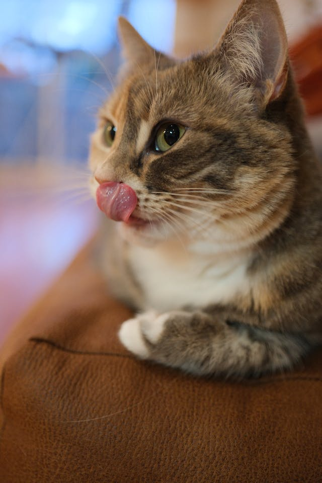

Boyut
Evcil kedinin Avrupa yaban kedisi'nden daha küçük kafatası ve daha kısa kemikleri vardır. Baş-vücut uzunluğunda ortalama 46 cm (18 in) ve 23-25 cm (9-10 in) ortalama yükseklik, kuyruk uzunlukları da yaklaşık 30 santimetre (12 in)*’dir. Erkekler dişilerden daha büyüktür.
İskelet
Kedilerde yedi boyun omuru vardır; 13 torasik omur (insanlarda 12 tane vardır); yedi bel omuru; üç sakral omur(çoğu memelide olduğu gibi, ancak insanlarda beş tane vardır); ve kuyrukta değişken sayıda kaudal omur (insanlarda bir dahili kuyruk sokumu ile kaynaşmış yalnızca üç ila beş körelmiş kaudal omur vardır)

Kafatası
Kedi kafatası, çok büyük göz yuvalarına ve güçlü bir özel çenesiyle memeliler arasında nadirdir.[25]:35 Çene içinde, kedilerin avını öldürmek ve etini parçalamak için uyarlanmış dişleri vardır. Kedi avının üstün atladığında iki uzun köpek dişi ile boyundan öldürücü bir ısırıkla ısırır, dişlerini avının omur arasına sokup omuriliği koparır ve geri dönüşsüz felce ve ölüme neden olur